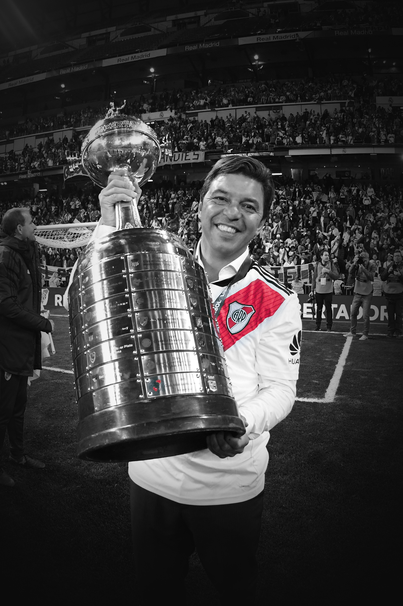
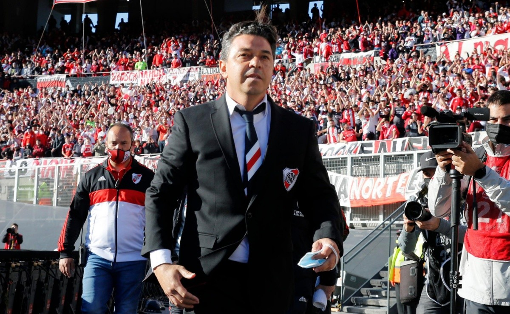
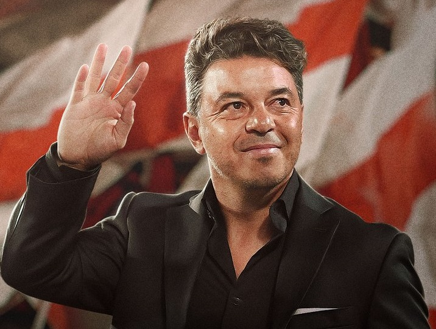

<!--Inspired by: https://www.youtube.com/watch?v=4NjlGo4sSRk&t=331s&ab_channel=DesignCourse-->

<!DOCTYPE html>
<html lang="en">
  <head>
    <meta charset="UTF-8" />
    <meta http-equiv="X-UA-Compatible" content="IE=edge" />
    <meta name="viewport" content="width=device-width, initial-scale=1.0" />
    <title>Gallardo Last Dance</title>
    <link rel="preconnect" href="https://fonts.googleapis.com" />
    <link rel="preconnect" href="https://fonts.gstatic.com" crossorigin />
    <link rel="stylesheet" href="css/main.css" />
  </head>
  <body></body>
</html>

<div class="wrapper">
  <section>
    
    <h1>Gallardo</h1>
    
    <div class="content">
      <p>
        Marcelo Gallardo se despide del Club Atlético River Plate. Su último
        partido oficial será el <b>23 de Octubre del 2022</b> Despedilo como se
        merece.
      </p>
      <a
        href="http://twitter.com/share?text=Gracias Marcelo Gallardo.&url=https://twitter.com/RiverPlate &hashtags=MuñecoEterno,RiverPlate,MarceloGallardo"
        target="_blank"
      >
        <span>Expresate</span>
        <svg width="258" height="8" viewBox="0 0 258 8" fill="none">
          <path
            d="M257.354 4.35355C257.549 4.15829 257.549 3.84171 257.354 3.64645L254.172 0.464466C253.976 0.269204 253.66 0.269204 253.464 0.464466C253.269 0.659728 253.269 0.976311 253.464 1.17157L256.293 4L253.464 6.82843C253.269 7.02369 253.269 7.34027 253.464 7.53553C253.66 7.7308 253.976 7.7308 254.172 7.53553L257.354 4.35355ZM0 4.5H257V3.5H0V4.5Z"
            fill="black"
          />
        </svg>
      </a>
    </div>
    
  </section>
</div>
